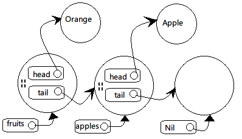

列表不是Scala语言的内建结构，而是定义在Scala包中的List抽象类。它有一个子类::和一个子对象Nil。
本节的目的是实现一个简化的List实现：
package scala
abstract class List[+T] { ... }
作为一个抽象类List不能用像new List这样的空构造器构建。
再来看类型参数[+T]表明列表是协变的：
scala> val xs = List(1, 2, 3) xs: List[Int] = List(1, 2, 3) scala> var ys: List[Any] = xs ys: List[Any] = List(1, 2, 3)
实现的目标要有以下三个功能：
def isEmpty: Boolean
def head: T
def tail: List[T]
这三个方法在List类中是抽象的，被定义在Nil和::中。
Nil对象继承自List[Nothing]，它定义了空列表。因为协变的作为它可以兼容任何类型的List实例：
case object Nil extends List[Nothing] {
override def isEmpty = true
def head: Nothing =
throw new NoSuchElementException("head of empty list")
def tail: List[Nothing] =
throw new NoSuchElementException("tail of empty list")
}
成员方法head的实现方法是抛出异常，因为对于成员类型Nothing来说，返回结果必须是Nothing，而Nothing是个根本不存在的类型，所以它无法正常返回结果，只能抛出异常。
::类读作“cons”，意思是“构造”，它实现了非空列表。冒号对应中缀模式，会被当作构造器使用：`x 是对类::的构造器调用::(x, xs)`。
final case class ::[T](hd: T, tl: List[T]) extends List[T] {
def head = hd
def tail = tl
override def isEmpty: Boolean = false
}
上面的代码可以简化，直接由参数实现超类List的head和tail方法：
final case class ::[T](head: T, tail: List[T])
extends List[T] {
override def isEmpty: Boolean = false
}
def length: Int =
if (isEmpty) 0 else 1 + tail.length
def drop(n: Int): List[T] =
if (isEmpty) Nil
else if (n <= 0) this
else tail.drop(n - 1)
def map[U](f: T => U): List[U] =
if (isEmpty) Nil
else f(head) :: tail.map(f)
::和:::都是绑定在右操作数上的。即，`x 被看作是xs.::(x)。因为x是列表元素可以是任意类型，所以不能假设它正好是具有::方法的类型。也由于这个原因::`方法应该生成一个新的列表。还有值得讨论的地方是新加入元素的类型。思维惯性上会认为和列表元素是同一类型，但实际上可用的范围更大。以下面的层级关系为例：
abstract class Fruit class Apple extends Fruit class Orange extends Fruit scala> val apples = new Apple :: Nil apples: List[Apple] = List(Apple@585fa9) scala> val fruits = new Orange :: apples fruits: List[Fruit] = List(Orange@cd6798, Apple@585fa9)
上面的例子说明新加入的元素可以产生超类类型的列表。实现这样弹性的::方法：
def ::[U >: T](x: U): List[U] = new scala.::(x, this)
注意方法本身是多态的，类型参数是U，添加的元素类型必须是U，返回结果类型是List[U]。而：
[U >: T]
限定列表元素T的超类。
结合前面的例子，U被实例化为Fruit。因为List[Apple]中的Apple是Fruit的子类，于是U的下界被满足。

实际上对带有下界的T定义不只是为了方便，更加是为类型正确。因为List是协变的，如果用下面的形式：
// Error def ::(x: T): List[T] = new scala.::(x, this)
因为方法参数被认为是逆变位置，所以上面的列表元素类型T处于逆变位置。这样List就不能被声明为T保持协变了。所以使用下界：
[U >: T]
即加强了类型检查，又让使用更加有弹性。
连接列表的实现方法差不多：
def :::[U >: T](prefix: List[U]): List[U] =
if (prefix.isEmpty) this
else prefix.head :: prefix.tail ::: this
因为::与:::是右关联的，所以下面四个语句其实相等：
prefix.head :: prefix.tail ::: this prefix.head :: (prefix.tail ::: this) (prefix.tail ::: this).::(prefix.head) this.:::(prefix.tail).::(prefix.head)
列表的典型访问模式是递归，比如有一个让列表所有元素自加１的方法：
def incAll(xs: List[Int]): List[Int] = xs match {
case List() => List()
case x :: xs1 => x + 1 :: incAll(xs1)
}
这个方法有个问题：incAll是在::运算里面的，不是尾递归，堆栈的爆掉的危险。
换个方案，用循环：
for (x <- xs) // ??
那循环体内怎么写？前面的incAll递归方案可以通过加前缀操作；循环只能通过加后缀，但:::操作时间与第一个列表长度成正比，效率很差：
var result = List[Int]() // a very inefficient approach for (x <- xs) result = result ::: List(x + 1) result
较好的办法是使用列表缓冲（list buffer）收集元素，最后用toList方法一次转换为列表。
类ListBuffer位于scala.collection.mutable包中。
import scala.collection.mutable.ListBuffer val buf = new ListBuffer[Int] for (x <- xs) buf += x + 1 buf.toList
虽然我们自己实现的List类很简洁，但实际上在遍历列表时为了避免递归一般都使用列表缓冲与循环结合的方式。
比如真正的List类是这样实现map方法的：
final override def map[U](f: T => U): List[U] = {
val b = new ListBuffer[U]
var these = this
while (!these.isEmpty) {
b += f(these.head)
these = these.tail
}
b.toList
}
看了以上的代码后，大家可能会对最后b.toList的效率感兴趣。实际上它的效率与列表的长度无关。关于原因可以看一下::类的实现：
final case class ::[U](hd: U,
private[scala] var tl: List[U]) extends List[U] {
def head = hd
def tail = tl
override def isEmpty: Boolean = false
}
可以看到参数tl的类型是var，所以列表除了头一个元素以下的部分还是可以改变的。而且修饰符private[scala]限定只有scala包中可以访问它。而修改它的是scala.collection.mutable中的ListBuffer。
ListBuffer的元素被表示为列表，而添加新元素操作只对列表中最后一个::单元的 t1 字段修改：
package scala.collection.immutable
final class ListBuffer[T] extends Buffer[T] {
private var start: List[T] = Nil // 所有元素的列表
private var last0: ::[T] = _ // 最后一个 '::' 成员
private var exported: Boolean = false // 是否执行过toList操作
toList方法的实现也很简单。它返回由start指向的列表，如果列表非空，就设置exported为true：
override def toList: List[T] = {
exported = !start.isEmpty
start
}
toList返回的列表应该是不可变的实例。那如果在这以后又被添加了元素的话，就不得不改变start指向的列表。所以为了维护正确性，由+=方法转向对一个新列表进行操作：
override def += (x: T) {
if (exported) copy()
if (start.isEmpty) {
last0 = new scala.::(x, Nil)
start = last0
} else {
val last1 = last0
last0 = new scala.::(x, Nil)
last1.tl = last0
}
}
上面的逻辑中可以看出，如果没有被toList过，还可以在原来的列表上修改。如果已经生成过列表了，那复制操作就不可避免。
回顾本章的内容可以感受到：指使式方案可以避免重复复制以提高效率；函数式风格以不可改点与不共享数据让程序变得更加可靠。
Scala官方的实现方式让程序在外部看来是函数式，而内部实现在不得已的情况下使用指令式实现。这样的实现可以被称作“外在函数式风格”。
先讨论一个例子，Person类有名字，性别，孩子三个成员：
case class Person(name: String, isMale: Boolean, children: Person*)
根据这个类建立一些实例：
val lara = Person("Lara", false)
val bob = Person("Bob", true)
val julie = Person("Julie", false, lara, bob)
val persons = List(lara, bob, julie)
如果要找出所有母亲与孩子的结对，方案一是使用map、flatMap和filter这样的高阶函数组成这样的查询操作：
scala> persons filter (p => !p.isMale) flatMap (p =>
| (p.children map (c => (p.name, c.name))))
res5: List[(String, String)] = List((Julie,Lara),
(Julie,Bob))
上面的代码很看起来挺难理解的，用for表达式来实现另一个版本：
scala> for (p <- persons; if !p.isMale; c <- p.children)
| yield (p.name, c.name)
res6: List[(String, String)] = List((Julie,Lara),
(Julie,Bob))
for循环比高阶函数可读性更加好一些。但实际上Scala编译器把循环版本转为高阶函数版本：
yield结果的for表达式会被转为map、flatMap与filter组合的调用。
yield结果的for表达式被转为filter与foreach的调用。
for表达式的一般形式：
for ( seq ) yield expr
其中的seq部分由生成器、定义、过滤器组成，以分号分隔：
for (p <- persons; n = p.name; if (n startsWith "To")) yield n
小括号可以由大括号代替，并且在用大括号的情况下还能省略分号：
for {
p <- persons // 生成器
n = p.name // 定义
if (n startsWith "To") // 过滤器
} yield n
如果有多个生成器，后面的生成器在内层的循环：
scala> for (x <- List(1, 2); y <- List("one", "two"))
| yield (x, y)
res0: List[(Int, java.lang.String)] =
List((1,one), (1,two), (2,one), (2,two))
8皇后问题：标准棋盘上放8个皇后，相互之间不能处理叫吃的位置上（同行、同列、同对角线）。
对于这个问题，把它扩展为任意尺寸的棋盘：在N*N的棋盘上放N个皇后，反而更加简单。现在左上角的坐标是(1,1)，右下角是(N,N)。
定义好了问题以后再看解决方案：
同一行的会被叫吃，所以每行只能放一个。那就一行一行地放皇后并检查会不会被叫吃。在处理过程中还会遇到第K行的皇后把从1到k-1行的皇后全都叫吃的局面，这时就要放弃这部分操作继续另外一种从1到k-1行皇后的配置方案。
另外一个方案更加具有函数式风格：
穷举出所有在N*N棋盘上放k个皇后的方案（0<k<N）。那么每个方案都可以用长度的k的列表表示，为了处理方便顺序要按堆栈的方式把第k行在最顶层，k-1到k行依次向下。所有的堆栈在一起组成了所有解决方案的列表。
现在我们把在第k+1行放皇后的操作变为对前一个方案多加一个皇后的所有可能的扩展。这会产一个长度为k+1的列表。
下面的placeQueens函数实现了这一算法：
def queens(n: Int): List[List[(Int, Int)]] = {
def placeQueens(k: Int): List[List[(Int, Int)]] =
if (k == 0)
List(List())
else
for {
queens <- placeQueens(k - 1)
column <- 1 to n
queen = (k, column)
if isSafe(queen, queens)
} yield queen :: queens
placeQueens(n)
}
两个生成器：queens <- placeQueens(k - 1)遍历所有行（递归调用），column <- 1 to n遍历所有列。
过滤器来检查有没有叫吃情况发生。
def isSafe(queen: (Int, Int), queens: List[(Int, Int)]) =
queens forall (q => !inCheck(queen, q))
def inCheck(q1: (Int, Int), q2: (Int, Int)) =
q1._1 == q2._1 || // 同一行
q1._2 == q2._2 || // 同一列
(q1._1 - q2._1).abs == (q1._2 - q2._2).abs // 对角线